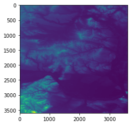

jupyter-notebookのサンプル¶
[1]:
import geopandas as gpd
import os
import rasterio
from matplotlib import pyplot
[2]:
dir_data = '../../../data/'
polygon_path = os.path.join(dir_data, 'japan_rvis_h25.shp')
[3]:
gpd.read_file(polygon_path, encoding='sjis')
[3]:
| KEN | SICHO | GUN | SEIREI | SIKUCHOSON | JCODE | P_NUM | H_NUM | geometry | |
|---|---|---|---|---|---|---|---|---|---|
| 0 | 北海道 | None | None | 札幌市 | 中央区 | 01101 | 220189.0 | 120596.0 | POLYGON ((141.38964 43.06860, 141.38705 43.067... |
| 1 | 北海道 | None | None | 札幌市 | 北区 | 01102 | 278781.0 | 127291.0 | POLYGON ((141.40535 43.18950, 141.40736 43.187... |
| 2 | 北海道 | None | None | 札幌市 | 東区 | 01103 | 255873.0 | 118804.0 | POLYGON ((141.44939 43.16263, 141.44848 43.158... |
| 3 | 北海道 | None | None | 札幌市 | 白石区 | 01104 | 204259.0 | 100343.0 | POLYGON ((141.47346 43.09612, 141.45060 43.064... |
| 4 | 北海道 | None | None | 札幌市 | 豊平区 | 01105 | 212118.0 | 107084.0 | POLYGON ((141.43407 43.02609, 141.43374 43.025... |
| ... | ... | ... | ... | ... | ... | ... | ... | ... | ... |
| 1902 | 沖縄県 | None | 島尻郡 | None | 久米島町 | 47361 | 8519.0 | 3598.0 | MULTIPOLYGON (((128.22077 27.88565, 128.22099 ... |
| 1903 | 沖縄県 | None | 島尻郡 | None | 八重瀬町 | 47362 | 26681.0 | 8118.0 | MULTIPOLYGON (((127.71368 26.18007, 127.71443 ... |
| 1904 | 沖縄県 | None | 宮古郡 | None | 多良間村 | 47375 | 1231.0 | 498.0 | MULTIPOLYGON (((124.68195 24.75719, 124.68199 ... |
| 1905 | 沖縄県 | None | 八重山郡 | None | 竹富町 | 47381 | 3859.0 | 1997.0 | MULTIPOLYGON (((123.81372 24.47403, 123.81374 ... |
| 1906 | 沖縄県 | None | 八重山郡 | None | 与那国町 | 47382 | 1657.0 | 712.0 | MULTIPOLYGON (((122.99737 24.47433, 122.99815 ... |
1907 rows × 9 columns
[4]:
raster_path = os.path.join(dir_data, 'elevation/n48_e016_1arc_v3.tif')
[5]:
raster_path
[5]:
'../../../data/elevation/n48_e016_1arc_v3.tif'
[6]:
with rasterio.open(raster_path) as raster:
raster_array = raster.read(1)
pyplot.imshow(raster_array)
[6]:
<matplotlib.image.AxesImage at 0x7fef391ed450>
